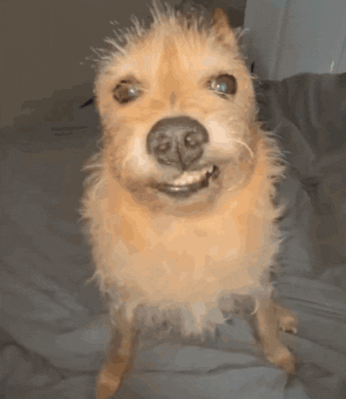

Esta é a primeira página do projeto.
Na imagem em questão, observa-se um cão de pequeno porte, cuja pelagem apresenta coloração predominantemente alourada, com textura levemente desgrenhada, conferindo-lhe um aspecto rústico e espontâneo. O animal encontra-se sentado sobre uma superfície têxtil, possivelmente uma cama, evidenciada pelas dobras do tecido em segundo plano. O que se destaca de forma imediata é a expressão facial do animal: a boca encontra-se parcialmente erguida em um dos lados, expondo discretamente a arcada dentária superior, o que resulta em uma conformação semelhante a um sorriso enviesado. Tal expressão transmite uma ambiguidade curiosa, mesclando traços de simpatia, ironia e até mesmo malícia, de modo que o observador humano tende a antropomorfizar a atitude como se fosse um gesto intencional. Os olhos, ligeiramente semicerrados, intensificam o caráter expressivo da cena, reforçando a impressão de que o cão não apenas percebe a presença da câmera, mas interage com ela em um gesto que remete a uma espécie de cumplicidade silenciosa. O nariz, escuro e bem definido no centro do rosto, direciona a atenção do espectador ao contraste entre a neutralidade da morfologia canina e a peculiaridade do sorriso capturado. A iluminação incide de maneira frontal, destacando as tonalidades douradas do pelo e criando reflexos que realçam sua textura áspera. O enquadramento centralizado e a proximidade do registro ampliam o impacto da expressão, eliminando distrações externas e obrigando o olhar a se fixar na estranha e fascinante simetria imperfeita do semblante canino. Assim, a cena pode ser interpretada como um retrato singular de comicidade involuntária, no qual o animal, por meio de um simples ajuste labial, adquire uma expressão humanizada que provoca tanto estranhamento quanto humor no observador.